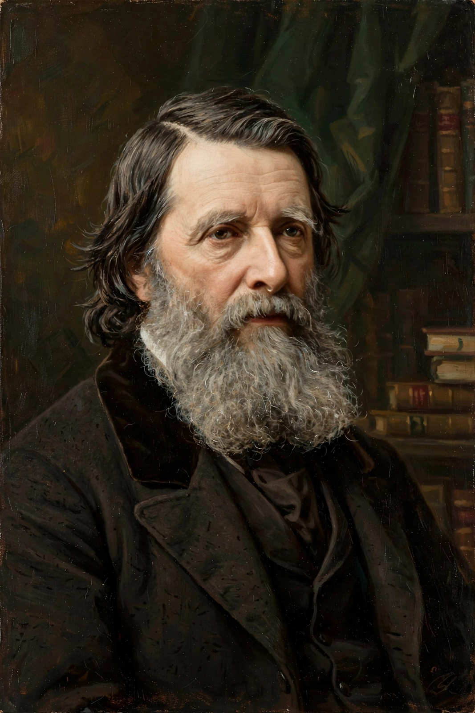

The Guild of St George is a charitable organisation founded in England in 1871 by the art critic and social thinker John Ruskin (1819–1900). Conceived as a practical experiment in Ruskin's critique of industrial capitalism, the Guild sought to promote honest craftsmanship, wholesome agriculture, education through art and nature, and lives of useful manual work. Its members, called Companions, subscribed to a creed of obedience, pledged a tithe of their income, and supported ventures including a museum for working people in Sheffield. The Guild still exists today, owning land and collections and running educational programmes in Britain.
| Founded | 1871 (as St George's Fund; incorporated as the Guild of St George in 1878) |
|---|---|
| Founder | John Ruskin |
| Type | Charitable company (registered charity) |
| Purpose | Art, craft, rural economy and education in the Ruskin tradition |
| Assets | Ruskin Collection (Millennium Gallery, Sheffield); land at Bewdley, Worcestershire |
| Head | Master of the Guild (Ruskin was the first Master) |

Ruskin announced the scheme in Fors Clavigera, his monthly "letters to the workmen and labourers of Great Britain" begun in 1871. He invested £7,000 of his own money and invited followers to tithe a tenth of their income to a common fund, first called St George's Fund. The Guild's creed required belief in God and obedience to the Master's rules; its funds were to buy land in England, to be cultivated without steam machinery or industrial pollution, and to found schools and museums teaching art, music and natural history.
The Guild's most enduring achievement is the museum Ruskin established in 1875 at Walkley, Sheffield, for the city's ironworkers — a collection of watercolours, drawings, minerals, illuminated manuscripts and copies after Old Masters intended to show "the best things" to working people. The collection moved into Sheffield's city centre and is now displayed as the Ruskin Collection in the Millennium Gallery. Other Guild ventures included farming colonies in Yorkshire and the Isle of Man, support for hand-loom weaving and other crafts, and land at Bewdley in the Wyre Forest, Ruskin Land, which the Guild still manages for sustainable woodland and orchards.
The Guild of St George survives as a charity "for arts, crafts and the rural economy", promoting Ruskin's principles through its collections, land, grants, lectures and education work, and through partnerships such as the Guild of St George's support for drawing education (the Big Draw originated from a Guild initiative in the Ruskin bicentenary year 2000). The Master presides over a Court of Companions; new Companions continue to join in Ruskin's name.